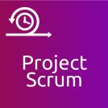
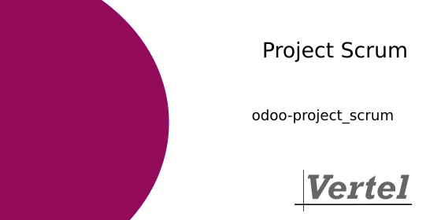

Using Scrum to plan the work in teams.
Using Scrum to plan the work in teams.
It introduces the model(s) ProjectUserStories, ScrumSprintTags, ScrumSprint to handle this workflow.
It extends Odoo's analytic lines, tasks, projects.
Adds its own models: ProjectUserStories, ScrumSprintTags, ScrumSprint.
Step-by-step dialogs for data entry.
Adds action_assign_to_me, action_view_sprint_calendar, action_create_sprint_calendar.
Extends 4 view(s) in the Odoo interface.


projectmailhr_timesheetsales_teamcalendarweb_mermaidproject_task_closedRequires Odoo 18.0 or later.
Install the module project_scrum from the Odoo Apps menu,
or deploy it via the Vertel SaltStack pipeline.
Vertel Sverige AB — vertel.se · info@vertel.se